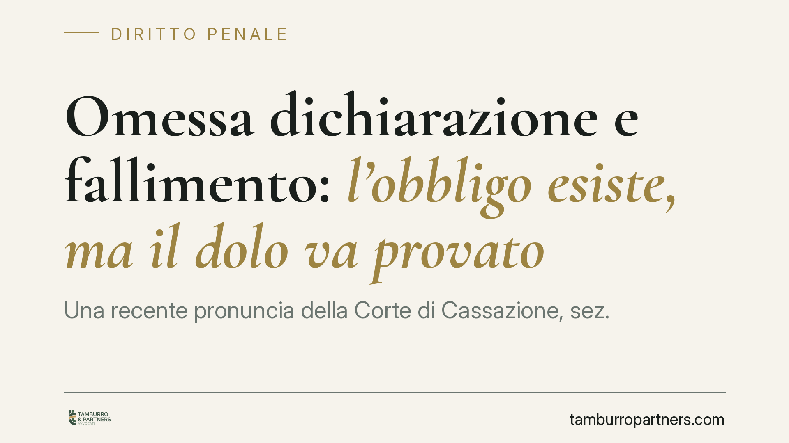

Omessa dichiarazione e fallimento: l'obbligo esiste, ma il dolo va provato
Una recente pronuncia della Corte di Cassazione, sez. III penale, conferma che l'obbligo dichiarativo per i periodi d'imposta la cui gestione era riferibile all'imprenditore permane anche dopo l'apertura del fallimento. Ma annulla la condanna: il dolo specifico di evasione non può desumersi dalla sola consapevolezza dell'omissione. Una distinzione che pesa sulla difesa penale-tributaria.

Il caso
Un'amministratrice di società veniva condannata dalla Corte d'appello di Perugia per omessa dichiarazione ai sensi dell'art. 5 del D.lgs. 74/2000. Il termine di presentazione della dichiarazione era scaduto dopo la dichiarazione di fallimento, quando la gestione era ormai passata al curatore fallimentare e l'imprenditrice aveva perso il controllo della documentazione contabile.
La Cassazione ha affrontato due questioni distinte: l'esistenza dell'obbligo dichiarativo in capo al soggetto fallito e la prova dell'elemento soggettivo del reato.
*Nota redazionale: il numero e l'anno della sentenza vanno verificati sulla fonte ufficiale prima della pubblicazione definitiva.*
Inquadramento normativo
L'art. 5 del D.lgs. 74/2000 punisce chi, al fine di evadere le imposte sui redditi o sul valore aggiunto, non presenta — essendovi obbligato — una delle dichiarazioni relative a dette imposte, quando l'imposta evasa supera la soglia di punibilità. Nella versione vigente tale soglia è fissata in euro 50.000 per singola imposta e per ciascun periodo. La soglia applicabile va comunque individuata in base alla versione temporale della norma vigente al momento del fatto.
Il punto centrale riguarda l'elemento soggettivo. L'art. 5 richiede il dolo specifico: non basta la coscienza e volontà di omettere la dichiarazione (dolo generico), occorre che l'omissione sia finalizzata a evadere le imposte. È una direzione ulteriore della volontà, che l'accusa deve dimostrare.
La distinzione che fa la differenza
La Corte tiene fermi due piani separati.
Sul primo piano — l'obbligo — conferma che il dovere di presentare la dichiarazione per i periodi d'imposta la cui gestione era riferibile all'imprenditore non si estingue per effetto del fallimento, anche se il termine scade dopo l'apertura della procedura. L'obbligo riguarda la gestione pregressa riferibile al soggetto, non l'attività del curatore.
Sul secondo piano — il dolo — la Corte annulla la condanna. Il dolo specifico di evasione non può essere ricavato in via automatica dalla sola consapevolezza di aver omesso la dichiarazione. La consapevolezza dell'omissione attiene al dolo generico; la finalità evasiva è un quid ulteriore che va provato con elementi concreti. L'onere di questa prova resta a carico dell'accusa e non può fondarsi su automatismi presuntivi.
Implicazioni pratiche
Per l'imprenditore che attraversa una crisi d'impresa, la pronuncia ha ricadute dirette.
Quando sopraggiunge il fallimento, il controllo sulla documentazione contabile passa al curatore. L'imprenditore può trovarsi nell'impossibilità materiale di accedere ai dati necessari per compilare una dichiarazione il cui termine scade dopo lo spossessamento. In questo scenario la contestazione penale non può reggersi sul mero dato oggettivo dell'omissione.
Esempi tipici: il subentro del curatore che impedisce l'accesso ai registri; la perdita del controllo documentale per effetto dell'apprensione dell'attivo; l'assenza di liquidità o di strutture amministrative per adempiere. Sono circostanze che incidono sulla prova della finalità evasiva e vanno documentate.
Resta fermo che l'esistenza dell'obbligo non è in discussione. Ciò che la difesa può contestare è la sussistenza del dolo specifico: un conto è non aver dichiarato, altro è aver omesso per evadere.
Cosa fare in concreto
- Ricostruire la cronologia dei termini dichiarativi rispetto alla data di apertura del fallimento, per verificare quali periodi ricadano nella gestione riferibile al soggetto.
- Documentare lo spossessamento: individuare con precisione il momento in cui il controllo contabile è passato al curatore e l'eventuale impossibilità di accesso ai dati.
- Verificare la soglia di punibilità applicabile ratione temporis, calcolando l'imposta evasa per singola imposta e periodo.
- Raccogliere elementi che escludano la finalità evasiva: comunicazioni con il curatore, richieste di documentazione, condizioni oggettive di impossibilità.
- Valutare la posizione in sede difensiva tenendo distinti il piano dell'obbligo da quello del dolo. La tempestività nella ricostruzione documentale incide sulla solidità della strategia difensiva.
La pronuncia conferma un principio di garanzia: in materia penale-tributaria la responsabilità non discende da automatismi. L'omissione è il presupposto, non la prova del reato.
---
Contributo informativo a cura di Tamburro & Partners - Avv. Giuseppe Tamburro. Non costituisce parere legale.
Ogni condominio ha una storia a sé.
Se gestisci un'amministrazione e vuoi un confronto su una specifica questione condominiale, scrivi allo studio. Ti rispondiamo entro un giorno lavorativo.